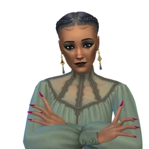

Introducción a Los Sims 4
Los Sims es un videojuego de simulación social y estrategia creado por el diseñador de videojuegos Will Wright, desarrollado por Maxis y publicado por Electronic Arts en el año 2000. Desde entonces la franquicia ha vendido más de 100 millones de copias (contando las dos primeras generaciones), siendo el videojuego de PC más vendido de la historia. Es considerado por muchos el mejor juego del mundo por su profundidad y posibilidades creativas.
Los Sims es el primer videojuego de este género en el que cada ser vivo tiene personalidad propia y se controla individualmente de forma directa. Como curiosidad, antes de publicarse, los creadores llamaban al juego "casa de muñecas" o "el juego del inodoro", puesto que era el único videojuego que incorporaba un retrete totalmente funcional y que personajes de diferente género usaban de maneras diferentes (levantaban o no la tapa).
El juego consiste en crear personajes llamados Sims y satisfacer sus necesidades, concretar sus aspiraciones y cumplir sus sueños, es decir, "construirles" una vida. El juego, en perspectiva isométrica pseudotridimensional, permite diseñarles a los Sims una casa y abastecerla con todos los objetos que se requieran para satisfacer sus necesidades. El juego posee una opción de modo libre (libre albedrío) con la que los personajes pueden realizar sus actividades por sí solos, aunque lo normal es que el jugador intervenga dándoles órdenes, las cuales pueden incluso no ser respetadas por los Sims en situaciones específicas. El jugador deberá satisfacer las necesidades básicas de los Sims, como comer, dormir, o ir al baño, entre otras. Para sustentar la economía de la casa, los Sims deberán buscar trabajo y ganar Simoleones (la moneda ficticia en el mundo Sim), el juego ofrece una variada línea de trabajos, y el personaje podrá ir ascendiendo en su trabajo dependiendo de las habilidades que tenga y la cantidad de amigos.
Algunas características interesantes son:
- Creación de Sims detallada
- Construcción y diseño de casas
- Interacciones sociales diversas
Marca y cita
"Los Sims 4 permite a los jugadores expresar su creatividad sin límites." — Sitio oficial.
Características Principales
- Construcción de casas
- Desarrollo de habilidades
- Personalización de Sims
Multimedia
Audio del Trailer de Los Sims 4 Vida en el Pueblo
Vídeo trailer de Los Sims 4 Vida en el Pueblo:
Vídeo trailer de Los Sims 4 Vida y más Allá:
Mis Expansiones Favoritas
- Los Sims 4 ¡A Trabajar!
- Controla activamente a tus Sims mientras están en el trabajo con las nuevas profesiones de médico, detective y científico loco.
- Vida Isleña
- Explora un mundo desenfadado de sol, arena y diversión ilimitada donde crear tu paraíso particular y conocer a las sirenas.
- Los Sims 4: Vida en el Pueblo
- Disfruta del pintoresco encanto de Villagallina de la Bolsona con amistades, animales, comida de la huerta y una comunidad muy unida.
- Los Sims 4: Perros y Gatos
- Crea montones de perros y gatos y añádelos al hogar de tus Sims. Adopta y cuida mascotas en tu hogar y las de tus vecinos con la nueva profesión de veterinaria.
- Los Sims 4: Vida y Más Allá
- Cruza al otro lado del velo para descubrir el secreto de una vida plena y lo que hay tras la muerte.
Galería de Imágenes


Tabla de Mis Sims Favoritos
| Personaje | Ocupación Principal | Habilidad Principal |
|---|---|---|
| Olvido Specter | Cocina Gourmet | Viuda negra |
| Max Rodriguez | Artista | Pintura |
| Sara López | Escritura |
Imágenes de mis Sims favoritos


Tabla de Mis Proyectos
| Proyecto | Año | Estado |
|---|---|---|
| Canal de YouTube | 2025 | En progreso |
| Website personal | 2025 | En desarrollo |
| 2025 | En progreso |
Contacto
Si quieres comentarme algo o sugerir nuevo contenido de Los Sims 4, escríbeme un mensaje.